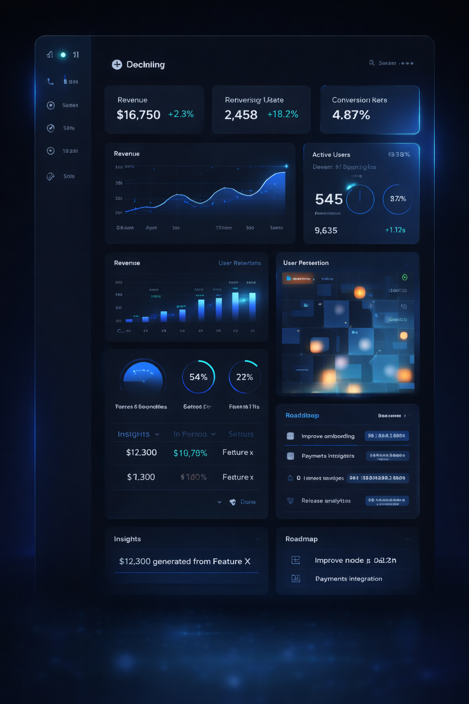
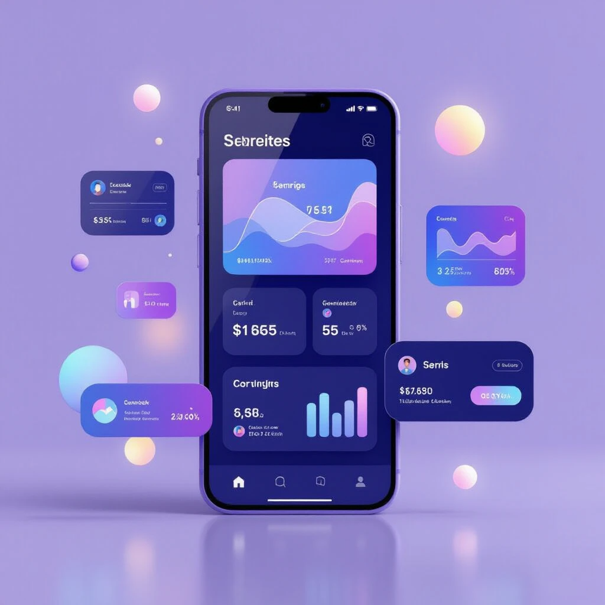
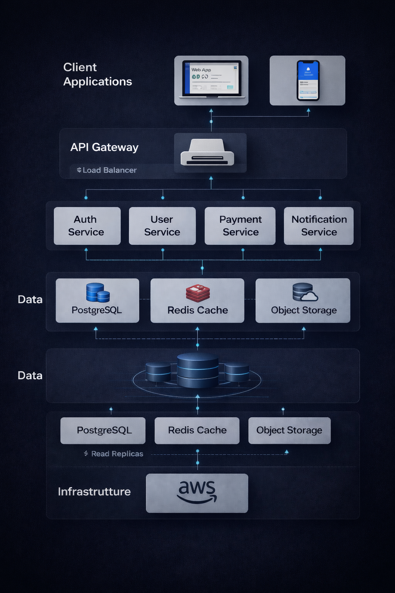

HtmlCSSJavaScript
Tesla Redesign
Uma reimaginação ousada da landing page mais icônica da indústria automobilística. Performance que inspira o futuro.
Frontend Developer com foco em aplicações escaláveis, código limpo e performance em produção.
React · Node.js · Stripe
HTML · CSS · JavaScript
HTML · CSS · JavaScript
Aplicações reais com código limpo, performance e atenção aos detalhes que fazem diferença.
Uma reimaginação ousada da landing page mais icônica da indústria automobilística. Performance que inspira o futuro.

Este projeto apresenta um cardápio de hambúrgueres, mostrando diferentes opções de produtos e seus preços.

Landing page temática com animações CSS, design responsivo e SEO técnico completo.

Este é o site de uma cafeteria, com destaque para o café como produto principal. Conheça nossos tipos: Americano, Expresso e Cappucci

O objetivo deste projeto é criar um site conversor de moedas. Basta inserir o valor e escolher a moeda de destino para obter a conversão.
Full Stack • Product · São Paulo, Brasil
Certificação Microsoft
Desenvolvedor Front-end focado em performance, escalabilidade e entrega de soluções que reduzem retrabalho e melhoram conversão. 2+ anos em desenvolvimento web | 10+ anos em ambientes corporativos | Certificado Microsoft.
Formado em Sistemas de Informação e desde 2024 em formação Full Stack pelo DevClub, construindo projetos reais com foco em performance, UX/UI e boas práticas de desenvolvimento. Trabalho com JavaScript, TypeScript, React, Node.js, MongoDB, AWS e Docker.
Um dos meus principais projetos é o DevBurguer — sistema completo de lanchonete digital com autenticação JWT, totalização automática de pedidos e integração de pagamentos via Stripe.
Trago para o desenvolvimento mais de 10 anos de experiência em TI corporativa — com passagem por multinacional em suporte de automação bancária — o que me deu visão de produto, disciplina técnica e capacidade de trabalhar sob pressão real.

Analiso o problema antes de codar. Entrego features orientadas a métrica, não a requisito.

React + TypeScript. Performance, SEO e acessibilidade como padrão desde o primeiro componente.

APIs Node.js construídas para crescer. Autenticação, pagamentos e dados prontos para produção.
Mais de 10 anos em TI corporativa — com passagem por multinacional em suporte de automação bancária e sistemas críticos — formaram uma base sólida de disciplina técnica, visão de produto e capacidade de trabalhar sob pressão real. Nos últimos 2 anos direcionei essa bagagem para o desenvolvimento Front-End.
Construo interfaces orientadas a produto — funcionais, rápidas e fáceis de manter. Cada decisão técnica considera performance, experiência do usuário e escalabilidade a longo prazo.
Desenvolvimento de APIs RESTful com autenticação segura via JWT e integração de pagamentos com Stripe. Arquitetura pensada para crescer sem reescrever.
Infraestrutura em AWS com EC2 e S3 e containerização com Docker. Background em suporte corporativo que trouxe consciência de disponibilidade, SLA e gestão de incidentes para o dia a dia do desenvolvimento.
Uma década em ambientes de alta pressão não é uma transição de carreira — é a base que diferencia. Enquanto a maioria aprende sobre SLA, gestão de crise e foco no usuário ao longo dos anos, essa já é minha segunda natureza. Entrego código. E entendo o impacto por trás dele.